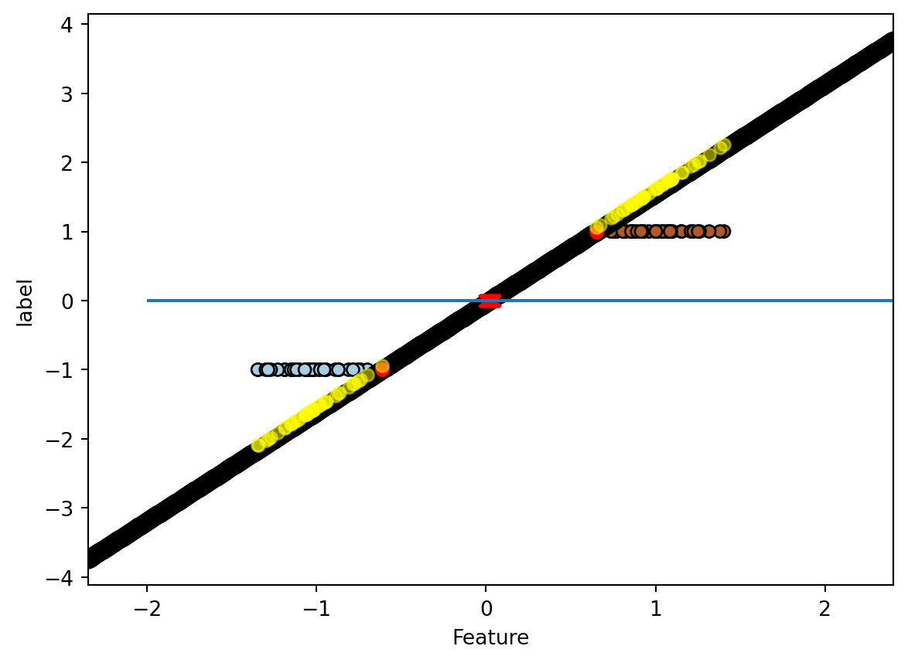

import numpy as np
import matplotlib.pyplot as plt
from sklearn import datasetsSVM
Support Vector Machines (SVM) is a powerful machine learning algorithm used for both classification and regression tasks. In this tutorial, we will focus on how to use SVM for classification.
Before diving into the code, let’s understand the intuition behind SVM.
Intuition behind SVM
SVM is based on the concept of finding a hyperplane that best separates the data points belonging to different classes. The hyperplane is determined by support vectors, which are the data points closest to the decision boundary.
In a binary classification problem, SVM aims to find a hyperplane that maximizes the margin between the support vectors of the two classes. The margin is the distance between the hyperplane and the nearest data points from each class.
The optimal hyperplane can be described by the equation:
\(w^T x - b = 0\)
where \(w\) is the normal vector to the hyperplane and \(b\) is the bias.
The equation of the decision function is:
\(f(x) = sign(w^T x - b)\)
where \(sign(\cdot)\) is the sign function.
SVM can also handle non-linearly separable data by using a technique called the kernel trick. This technique transforms the original feature space into a higher-dimensional space, making the data linearly separable.
Now, let’s implement SVM for a classification problem using the famous Iris dataset.
Importing Libraries and Loading the Dataset
The first step is to import the required libraries and load the dataset. We will use scikit-learn library, which provides a simple API for SVM implementation.
Next, let’s generate some synthetic data with two classes. We will use the make_classification function from the sklearn.datasets module to create a random dataset.
from sklearn.datasets import make_classification
np.random.seed(0)
X, y = make_classification(n_samples=100, n_features=1, n_informative=1, n_redundant=0, n_clusters_per_class=1)
y = y*2 - 1We have created a dataset with 100 samples, 1 feature, and 1 informative features.
Now, let’s visualize the data using a scatter plot:
plt.scatter(X[y == 1], y[y == 1], color='b', label='Class 1')
plt.scatter(X[y == -1], y[y == -1], color='r', label='Class 0')
plt.xlabel('Feature')
plt.ylabel('Label')
plt.legend()
plt.show()We have plotted the data points for each class on a scatter plot.
Training the Support Vector Machine Classifier
Once we have loaded the dataset, we can proceed to train the SVM classifier.
from sklearn.svm import SVC
from sklearn.model_selection import train_test_split
# Split the data into training and testing sets
X_train, X_test, y_train, y_test = train_test_split(X, y, test_size=0.2, random_state=42)
# Create an SVM classifier object
svm = SVC(kernel='linear', C=1e10)
# Train the SVM classifier
svm.fit(X_train, y_train)SVC(C=10000000000.0, kernel='linear')In a Jupyter environment, please rerun this cell to show the HTML representation or trust the notebook.
On GitHub, the HTML representation is unable to render, please try loading this page with nbviewer.org.
SVC(C=10000000000.0, kernel='linear')
In this code block, we first split the data into training and testing sets using the train_test_split() function. We reserve 20% of the data for testing and set the random_state parameter for reproducibility purposes.
Next, we create an SVM classifier object using the SVC class from scikit-learn. We specify the kernel parameter as ‘linear’ for a linear SVM.
Finally, we train the SVM classifier using the fit() method by passing the training data (X_train) and the corresponding class labels (y_train).
Making Predictions and Evaluating the Model
After training the SVM classifier, we can use it to make predictions on new, unseen data.
# Make predictions on the testing set
y_pred = svm.predict(X_test)
# Evaluate the model
accuracy = np.sum(y_pred == y_test) / len(y_test)
print("Accuracy: ", accuracy)Accuracy: 1.0In this code block, we use the trained SVM classifier to make predictions on the testing set (X_test). The predicted class labels are stored in the y_pred variable.
We then evaluate the model by calculating the accuracy of the predictions. The accuracy is defined as the number of correctly classified data points divided by the total number of data points.
Visualizing the Decision Boundary
To visualize the decision boundary and the support vectors, we can use the following code:
def plot_decision_boundary(classifier, X, y):
# Define the range of x values for the mesh grid
x_min, x_max = X.min() - 1, X.max() + 1
# Create a mesh grid
xx = np.linspace(x_min, x_max, 1000)[:, np.newaxis]
# Use the classifier to make predictions on the mesh grid
yy = classifier.decision_function(xx)
# get support vectors
i_sv = classifier.support_
sv_x = X[i_sv]
sv_y = y[i_sv]
print(f'Support vectors are: \nX={sv_x}\ny={sv_y}')
# get w and b
w = svm.coef_
b = svm.intercept_
print(f'W={w}\nb={b}')
# print(f"wX-b:\n{w*X-b}")
# where the decision function is zero
ind_0 = np.where((yy<=5e-2) & (yy>=-5e-2))[0]
# print(ind_0)
distance1 = xx[ind_0].mean() - sv_x[0]
distance2 = xx[ind_0].mean() - sv_x[1]
print(f'\ndistance to \nsupport 1: {distance1} \nsupport 2:{distance2}')
# Plot the decision boundary and support vectors
plt.hlines(0,-2, 3)
plt.scatter(X, y, c=y, cmap=plt.cm.Paired, edgecolors='k')
plt.scatter(xx, yy, color='black', linewidth=3)
plt.scatter(sv_x,sv_y, color='red')
plt.scatter(X,w*X-b,color='yellow', alpha=0.5)
plt.scatter(xx[ind_0], np.zeros(len(ind_0),), marker='x', color='red')
plt.xlim(x_min, x_max)
# plt.ylim(-0.2, 1.2)
plt.xlabel('Feature')
plt.ylabel('label')
plt.show()
# Visualize the decision boundary
plot_decision_boundary(svm, X_train, y_train)Support vectors are:
X=[[-0.61120543]
[ 0.65311592]]
y=[-1 1]
W=[[1.58187634]]
b=[-0.0331486]
distance to
support 1: [0.63295407]
support 2:[-0.63136728]
In this code block, we define a helper function plot_decision_boundary() that takes a trained classifier object (svm), the training data (X_train), and the corresponding class labels (y_train) as input.
The function calculates the minimum and maximum values of the two features to define the plotting range. It then generates a mesh grid with a step size h and predicts the class labels for each point in the grid using predict() method.
Finally, it plots the decision boundary by contouring the predicted class labels and scatter plots the training data points.
Running this code will display the decision boundary and the support vectors.
This is how we can implement SVM for classification in Python. SVM is a versatile algorithm and can be further fine-tuned by selecting different kernels and hyperparameters for better performance.